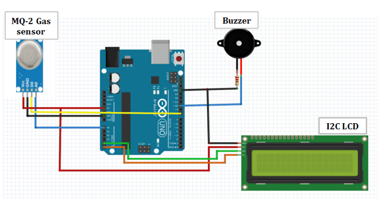
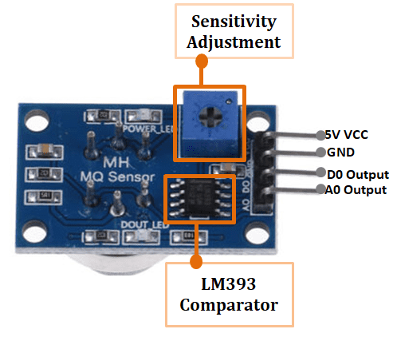

Las fugas domésticas son riesgos silenciosos. Este proyecto utiliza la química de semiconductores y la computación embebida para crear un entorno seguro mediante alertas tempranas.
Invisibilidad del gas LP y monóxido en concentraciones bajas pero peligrosas.
Detección selectiva de GLP, Metano, Butano y Humo mediante SnO₂.
Buzzer y LEDs de alta intensidad para respuesta inmediata bajo 500ms.
Esta sección explica cómo el dióxido de estaño (SnO₂) reacciona a nivel molecular. En aire limpio, el oxígeno se absorbe y crea una alta resistencia. Ante el gas, ocurre una reducción que libera electrones.
Gas (R) + O₂⁻ (ads) → RO₂ + e⁻
La liberación de electrones aumenta la conductividad medible por el Arduino.

Interactúa con el experimento para observar la respuesta cinética del sensor MQ-2.
El diseño integra un microcontrolador ATmega328P para procesar la señal analógica y convertirla en una respuesta digital inmediata.

Referencia de cableado: VCC (5V), GND, A0 (Señal).
int sensorPin = A0;
void loop() {
int val = analogRead(sensorPin);
if(val > 400) {
digitalWrite(buzzer, HIGH);
Serial.println("ALERTA!");
}
delay(500);
}
Para asegurar la precisión, el sensor se somete a una prueba de linealidad.
| Prueba | Concentración (s) | Lectura (ADC) |
|---|---|---|
| P-01 | 1s | 320 |
| P-02 | 1s | 325 |
| P-03 | 3s | 610 |
| P-04 | 3s | 615 |
| P-05 | Aire | 180 |
El sistema no solo lee valores fijos, sino que calcula la velocidad de cambio para anticipar fugas súbitas.
Donde V es la pendiente de respuesta del sensor.